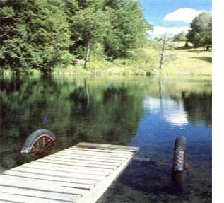

When designing the perfect pier for your pond, there are a number of reasons why you might want to build . . .
For years, I've had an itch to put a mini wharf in my pond, but I was stymied by what seemed to be a simple question: Where should I put it? For example, in a small (one-eighth acre) body of water like mine, a pier moored in a fixed spot along a shallow shore might be great for children, sunbathers, or ice skaters . . . but what about the structure's disadvantages?
Mounting a dock permanently can be tricky in ponds where the water level bobs up and down according to the rainfall. One that's well suited for diving in April may be high and dry by July! Then too, a dock is a perfect place to lash a cage full of fish being fattened for the table, since it offers easy access for stocking, feeding, and harvesting. Cage culture, however, is also better suited to moderately deep water, where the temperatures stay cooler and the habitat is protected against drought. But come winter, when the harvest is over and it's time for ice hockey, who wants a dock jutting into the rink? What's more, after a few years of relentless freezing and thawing wracking the pilings out of kilter, a conventionally moored dock just might shove off on its own! And finally, the pond keeper who anticipates touch up shoreline excavation or dredging doesn't need a dock in the way when he or she is making repairs.
Fretting over all these considerations caused me to continually postpone the construction of my mini-pier . . . at least, until the day I got a look at the rolling dock in Donny Prescott's pond over on the other side of the mountain. It was the first one I'd seen that was not encumbered by those old-fashioned hang ups: pilings.
Instead, the shore bound end of Donny's dock perches on his dam, while the water bound end rests on a pair of old metal wheels submerged where their height balances out the basin's slope. The result is a sturdy, level, portable dock.
Donny told me that he built his unique pier out of a pair of 12-foot 2 X 6's (to serve as the carrying timbers) . . . one-inch planking . . . and the axle and wheels from an old discarded side-delivery hay-rake. After dismantling the rake, he trucked the axle and wheels to the pond, mounted one end of each of the carrying timbers to the axle, and nailed down the planks.
His creation-which can be rolled around to fit the season (and use), positioned to match water levels, or taken out of the pond entirely was such a successful solution to my quandary that I asked him for tips on building a movable dock for myself.
"I'd try to match the radius of the wheels with the slope of the pond basin," he told me. "The deeper you want to go, the bigger the wheels you'll need . . . so locate your axle and wheels first.
"And remember," he added, "you can roll the dock in only as deep as the axle. If you need to extend the carrying timbers beyond the wheels to get out farther into the water, you might have to stake down or cantilever the shore end, to prevent the whole thing from acting like a seesaw. Just keep a lookout for old farm machinery . . . get the axle and wheels that are suitable for your pond's size . . . and then build the dock to fit your needs."
Know what? That's exactly what I'm going to do!
|
 |
|
|